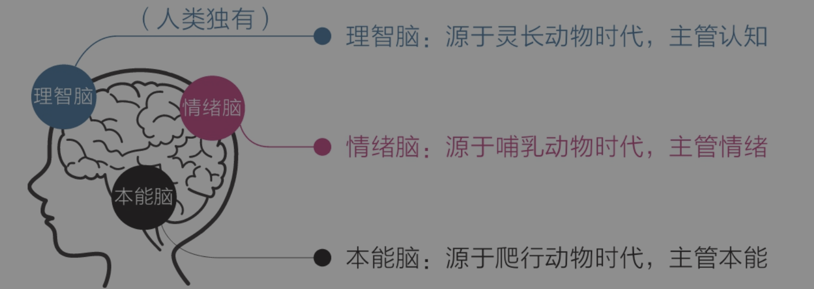

引言
《认知觉醒》这本书太经典了，反复读了多次还是爱不释手，因此决定针对它写写读书笔记。今天主要针对这本书的三重大脑理论进行讲解
三重大脑
作者认为人类的大脑分为三重分别是本能脑、情绪脑以及理智脑，三者的区别如下图(从书中拷贝的，侵权请联系删除)
很多相关书籍都会将大脑分为这三种，但本人觉得对于读者来说其实可以简化，将情绪脑和本能脑进行合并简称“非理智脑”。理智脑和非理智脑各有优缺点，理智脑相比之下更加高级，但是弱小，而非理智脑虽然低级但是非常非常强大。因此从人类远古时期到如今已跨入互联网第三次工业革命中，大部分人的决策还是通过非理智脑。这里分别例举两者的特点做下比较
理智脑特点
- 富有远见、善于权衡
- 能立足未来延迟满足
- 对大脑控制力弱
非理智脑优点
- 执行力强
- 避难趋易和急于求成
- 对大脑控制力强
通过这个比较相信大家能够明显的感觉到两者的差异，这里比较两者并不是想说理智脑更好，而是希望我们更加了解自己大脑这个“工具”。大脑是我们日常生活中最常用的“工具”，在我们的灵魂向大脑发送指令时，大脑会进行思考并做出对应决策，最终将决策的结果发送到身体的各个部位进行最终的“执行动作”。打个比方，如果每个人都是一个王国，那么灵魂就是国王，而理智脑是军师，非理智脑是将军，身体的各个部位分别是这个王国的子民。因此国王要做的是将国家发展战略相关的事情交给军师，将这个战略所依赖的各个事情交给将军，让将军带领部队、子民们去攻城拔寨从而壮大这个王国。
通过上面这个例子大家应该就清楚，理智脑和非理智脑从来不是对立的，而是协作，如何协调好两者是我们每个人需要做好的事情。用书中的原话来说就是 理智脑不是直接干活的，干活是本能脑和情绪脑的事情，因为它们的“力气”大；上天赋予理智脑智慧，是让它驱动本能和情绪，而不是直接取代它们。
生活例子
接下来结合以下几个例子来讲讲
-
营销手法
现如今很多营销手法本质上就是攻击每个人的“非理智脑”，例如不少主播带货，通过不停的喊倒计时来制造稀缺以及紧张的氛围，此时“非理智脑”就会本能的紧张以及在损失厌恶的心理下，“非理智脑”会以压倒性的形式远远战胜“理智脑”，即便“理智脑”能察觉到买这玩意可能没啥作用，但是没办法它对大脑的控制远远不如“理智脑”。这是聪明的商家屡试不爽的招数，除此之外的场景还有很多很多，例如当房价不停的疯狂上涨时，大部分人也会丧失理智跟风上车；当股价飕飕上涨时，也同样如此，这些趋利避害以及急于求成都是“非理智脑”的缺点，至少应该意识到这一点以及尽量避免因此遭到损失。
-
学习技能
在学习新技术/技能时，我们往往坚持不了太久，这是因为从学习曲线来说大部分前期都是比较容易，但是一旦过了前期之后，再进行努力都很难看到成效，此时很多人都会建议一定要自律之类的话，但是盲目的自律其实就是在让弱小的“理智脑”去对抗强大的“非理智脑”，结果失败都是非常正常的事。因此应该用“理智脑”去引导非理智脑，就拿学小提琴为例子，我们要做的不是强迫自己每天拉几个小时的小提琴，这只会变得痛苦以及更早的放弃。“理智脑”要做的应该是，要求自己去听几场音乐会，看小提琴家们在舞台上拉出悠扬的声音，这个画面会在未来的很长时间引导着“非理智脑”去充满热情练琴，其次就是选一些自己喜欢并且容易入门的曲子，在每天练完基本功后“奖励”自己拉一会自己的曲子，在曲子拉熟练后可以适当的在朋友们面前进行表演等。这只是以小提琴为例子，其他技能都是想通的，因此应该合理的应用好我们的“非理智脑”
总结
这类文章可能读起来会有点觉得像是傲慢的说教之类的，如果有类似的感觉我感到很抱歉，这并不是我的本意，我从过去到现在即使是将来在这方面都有要不断完善的地方，写出来一方面是给大家分享我的见解，另一方面自己也会时常回头看看、反思这块相关的内容并指导我自己更好的前行。最后跟大家分享文章中我很喜欢的一句话 习惯之所以难以改变，就是因为它是自我巩固的——越用越强，越强越用。要想从既有的习惯中跳出来，最好的方法不是依靠自制力，而是依靠知识。